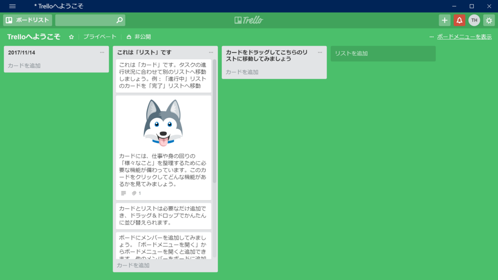
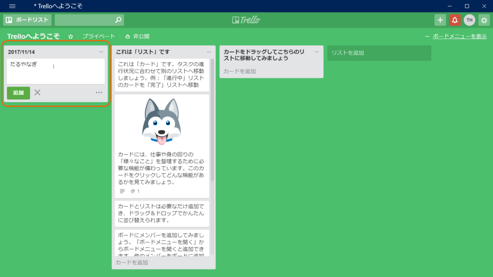
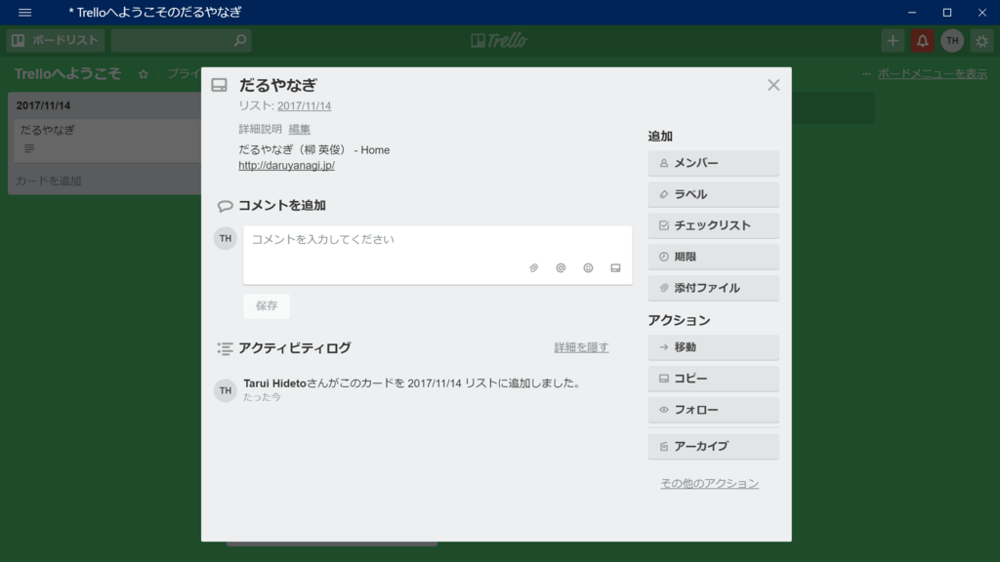
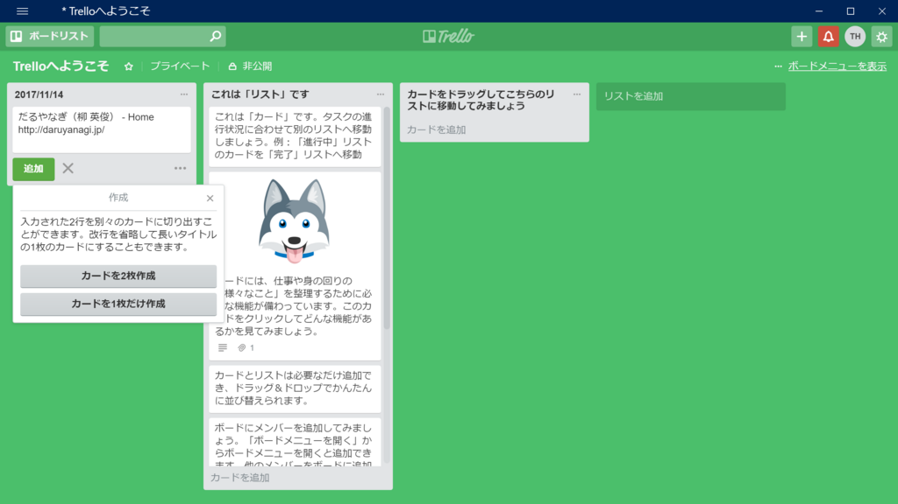

日記：Trelloについて
公開日：

最近、チームでのタスク管理に Trello を利用している。
以前はメッセンジャーのやりとりでタスクを管理していた。実際とは異なるが例示すると、「緊急」の場合は「！」、「要確認」の場合は「？」を文頭に付与して、あとで検索で探すという原始的な方法だ。けれど、さすがにこれでは管理が及ばなくなっていたし、UWP 版の「Skype」メッセージ検索が用をなさない――そう、「Skype」でやり取りをしていたのだ。この件についてはフィードバック済みだが反応はない――にもかかわらずデスクトップ版からの移行を強いられているという現状から、再三にわたって要望していたものが、ようやく先方にも受け入れられた格好だ。
これは個人的意見だけど、Trello はタスク管理がボード・リスト・カードのメタファーと親和しているのが長所で、また短所なのだろうと思う。グラフィカルに表現できて、マウスでガチャガチャいじれるのは大変わかりやすい一方、それをタスク管理の本質と見誤りやすい。カードをタスクになぞらえるのは有用だけど、タスクは決してカードではない。
タスク管理が失敗する要因の一つとして、それが実際の作業フローに合致していないという点がある。その齟齬は「運用」でカバーする必要がある。これが割と面倒で、面倒だからタスク管理をやらなくなる――どこまで厳密にルール化すべきか、イレギュラーなフローをどう扱うべきか、どこまでをレギュラーとし、どこからをイレギュラーとみなすか、ルールを変えたときに以前との互換性をどこまで考慮すべきか、ルールは感覚に任せるべきか、（新規参入メンバーのために）文書化すべきか。
その点、Trello はボード・リスト・カードというメタファーが「運用」の潤滑油として役立つ。リストの移動を何とみなすか、どういう場合にどういうラベルを付けるか――そういうものを半ば感覚、半ばルールとして体験的に共有できる。ところが、そこがまた曲者で、肌感覚に合わない「運用」をされると少し苛立つ。
もっとも顕著な例は、「無駄なことをされる」。ラベルを付けときゃ済むところで、わざわざタイトルを画一的に編集する。“今日やること”リストに移動させたカードすべてに、わざわざ期限を設定して回る。別に悪いことではないが、そんなエネルギーがあるなら、もっと肝心なことをすべきではないだろうか――肝心なことというのは無論、タスク管理の向こうにあるリアルな仕事である。タスク管理は仕事を円滑に進めるためにやる手段であり、目的ではない。
チームのタスク管理における「無駄な儀式」をどうすれば減らせるか、については自分の中では答えが出ていない。無駄な儀式に負のインセンティブを与えるのがもっともよいやり方なのかもしれないが、自分はそういう権限を持たない。自然、ルールの範疇で俺は俺、お前はお前――「そういう無駄なことは好きな奴にやらせて、自分は自分のスタイルでやる」――というやり方になるのだけど、それだとこっちの手間はともかく、チーム全体がよくなることはない。
ただ、Trello を自動化に組み込むことは一つの解決策だと、最近感じた。作業フローの自動化を行うと、人は自分のやり方を、自らの感性より、システムに合わせることになる。システムが合理的であれば、人のやり方は合理に近づき、統一化されていく。この例えはあまりスマートではないが、「タスクリストをコピペして文書を作る」なんていう無駄をやめて、スクリプトで自動生成するようになると、人は完成された文書を想像しながらタスクリストを管理するようになる。無駄な労力の追加は、スクリプトの想定外な動作を招くから、自然と抑制される。
もちろんタダでチームのためにスクリプトをこさえてあげる義理はない*1し、ちゃんとお金をもらえるようにしたい*2――逆に言えば、お金もらえる程度には不自由なくスクリプトやらフローやらを書けるようになりたい。まずは、「無駄な儀式よりも自動化」のメリットをうまく説かないとダメだな。
――それはともかく。最近、Trello でいい発見をした。
今まで Trello で URL を共有するとき、わざわざカードを作って、カードの概要に URL を貼っていたのさ。


URL を整形コピーする拡張機能でこんな感じのテキストをつくって、カード編集欄に貼り付けてたこともあるんだけど――例えばこんなの。
だるやなぎ（柳 英俊） - Home
https://blog.daruyanagi.jp/
これだとカードを1枚作るか、2枚作るかをいちいち聞かれるのがめんどい。

でも、カード編集欄じゃなくて、ボードへ直接貼り付ければ、勝手に1行目をカードタイトルに、全体をカード概要にした状態で、新規カードが作成されるのな。Trello コピー向けの整形ルールとか作れば、一手間二手間省けていろいろ楽になりそうだ。
問題はどのリストにカードが作成されるのかが読みにくいということだけど*3、それはそれ、Trello はマウスでカードをぶりぶり移動させられるんだし、変なところにできたら移動させればいいだけだ。ぜいたくを言うなら、新規カード作成時に明滅エフェクトか何かで場所を知らせてくれると親切だと思う。
今日の結論
怠惰へのあくなき情熱を共有してチームで幸せになりたい（← 官僚チックなヤツは叩きのめしたい）